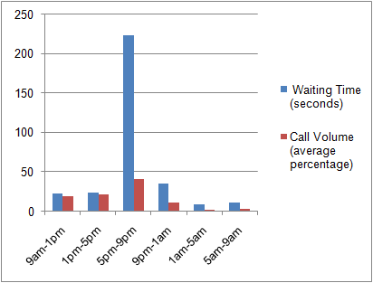

Report on the customer help desk's inbound customer call performance
Introduction
The following report evaluates the current performance level of our customer help desk based in Pudsey, Leeds. It focuses on its performance when dealing with inbound/incoming customer enquiries made by phone.
This report was produced in response to the results of a recent customer survey. This survey identified a high level of customer dissatisfaction with our company's help desk. Of the 1506 customers who left a rating for the help desk in the survey, 1254 of those rated the service as bad or terrible. Of this 1254, 67% gave the reason for their dissatisfaction as 'call waiting time', while 25% said that the 'service is unhelpful'.
The purpose of this report is to identify failings with the current set up of the help desk which could account for this low customer rating. And to recommend changes to the help desk to improve the service provided to customers.
Procedure
The findings which are contained in this report are predominantly based on a combination of statistics from the help desk's call management system (CallCom) and random monitoring of calls (100 in total) between customers and help desk analysts. Both the statistics and the call monitoring stem from the same 7 day period (4 May to the 11 May 2015).
In order to ensure the integrity of the results, during the period of evaluation, nobody in the help desk section was aware that an evaluation was being conducted.
After this 7 day period, a number of interviews with staff at the help desk (the manager of the section, a team leader and 6 help desk analysts) were then conducted to hear their views and opinions.
In addition to the above, I also reviewed the processes and procedures in place at the help desk for dealing with inbound/incoming call customer enquiries.
Findings
Customer waiting time
From reviewing the statistics from CallCom, one thing did stand out, the customer waiting time (before a call is answered by an help desk analyst). The length of customer waiting time varied throughout the day. During most of the day, the average waiting time for customers was around 25 seconds, but during 5pm to 9pm (except on weekends), this rose to an average of 3 minutes and 44 seconds.
These 4 hours of the day, coincide with the highest call volume of the day for the help desk. On average, 41% of all calls each day were received during these 4 hours.
Chart showing the average customer weekday waiting time and the average percentage of calls received during the period of the study.
During these peak hours of call volume, the help desk does have more analysts answering customer calls. On average 10 extra staff (mainly part-time) are answering customer calls during these peak hours.
Length of call
Not only did customer waiting time increase during these peak hours, but there was also an increase in how long staff were actually speaking with customers during these hours as well. During 5pm to 9pm (except on weekends), the average time that analysts spoke to customers increased from 4 minutes 23 seconds to 7 minutes and 59 seconds.

Chart showing the average length of help desk analyst speaking time with customers during the period of the study.
During these peak hours of call volume, the nature of the calls did not differ significantly from those received during the rest of the day. But what did stand out was a difference between the length of time that full-time analysts spoke to customers during these peaks hours (on average 6 minutes and 56 seconds) and part-time analysts (on average 9 minutes and 28 seconds).
The statistics from ComCall indicated that although part-time analysts performed only slightly slower than their full-time counterparts on simple enquiries (e.g. confirming account and balance information), they performed significantly slower on more complex enquiries (e.g. freezing and resetting accounts).
Monitoring of customers calls supports this. On more complex enquiries, part-time staff put their customers on hold more often and for longer while they consulted with other staff to find out what they had to do.
Call procedures and processes
The procedures and processes that are in place in the help desk for dealing with customer enquiries meet the industry's highest standards (the standards set down in the Financial Services Association's customer service best practices).
Through monitoring calls between customers and help desk analysts, I can confirm that the vast majority of analysts always followed set procedures when dealing with customer enquiries. Furthermore, except for one or two occasions, they dealt with customers in a professional manner (even when customers were aggressive).
The help desk's customer application system
From conducting interviews with help desk analysts, one of the things they stated was an issue was the slowness of the help desk's customer application system. In particular, they stated that the system had a tendency to run slow at peak hours (between 5pm to 9pm on weekdays). Resulting in them taking longer to deal with customer enquiries.
The monitoring of customer calls seems to confirm this. Analysts performed tasks using the system a lot slower when there were more staff taking calls (during peak call volume hours) than when there were less staff taking calls during the rest of the day.
Conclusion
The findings of this report on the help desk's performance would strongly seem to indicate that there is a problem with dealing with customer calls only during the hours of peak call volume (between 5pm to 9pm on weekdays). During these peak hours, the average waiting time for customers was nearly 10 times higher than during other times of the day (from an average of 25 seconds to an average of 3 minutes and 44 seconds).
Although it would appear that simply increasing the number of help desk staff taking calls would resolve this issue, the rise in the average time that analysts spoke to customers when dealing with enquiries (an average of 7 minutes and 59 seconds at peak call volumes in comparison with an average 4 minutes 23 seconds outside of these hours) would indicate that it is not only a problem of not having enough staff on at these times.
Although having more staff taking customer calls at these times should reduce the average customer waiting time, it would not address the issue of customer enquiries taking longer to resolve at these times. It would appear that this is the main factor causing the longer waiting times that customers are experiencing.
The findings would appear to demonstrate that this issue is caused by two main reasons:
- The help desk's customer application system
- The underperformance of part-time staff
The first (and most important) reason is that there appears to be a problem with the help desk's customer application system. It appears to run a lot slower during periods of peak call volume when more analysts are logged on and using it.
The second reason is that part-time staff complete tasks slower on average than their full-time colleagues. This would appear to not stem from a lack of willingness on their part to answer calls quickly, but that they have less experience on resolving more complex customer enquiries.
Recommendations
On the basis of the above findings, I make the following recommendations:
1. Request the I.T. department to perform an investigation into the problems experienced with the help desk customer application system as soon as possible.
2. Undertake a training programme for part-time help desk staff to improve their knowledge and speed in dealing with customer enquiries (especially more complex enquiries).
Contact
If you require any clarification or further information on the report, please do not hesitate to contact myself (James Smith) by email (jsmith@suttonbank.com) or by phone (01535 666541).

Follow us on